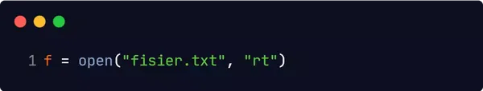
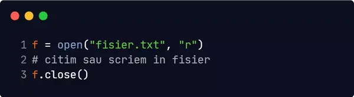
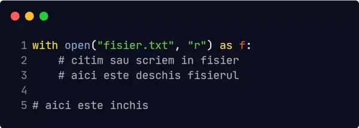
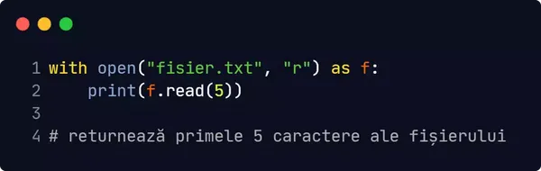

Gestionarea fișierelor este o parte importantă a oricărei aplicații.
Python are mai multe funcții pentru crearea, citirea, actualizarea și ștergerea fișierelor.
Manipularea fișierelor
Funcția cheie pentru lucrul cu fișiere în Python este funcția open().
Funcția open() ia doi parametri: numele fișierului și modul de deschidere.
Există patru metode diferite pentru deschiderea unui fișier:
-
'r' - Citire - Valoare implicită. Deschide un fișier pentru citire, aruncă excepție dacă
fișierul nu există.
-
'a' - Adăugare - Deschide un fișier pentru anexare, creează fișierul dacă nu există.
-
'w' - Scriere - Deschide un fișier pentru scriere, creează fișierul dacă nu există.
-
'x' - Creare - Creează fișierul specificat, returnează o eroare dacă fișierul există.
Puteți specifica dacă fișierul trebuie tratat ca binar sau text.
-
't' - Text - Valoare implicită. Mod text.
-
'b' - Binar - Mod binar (ex. imagini).
Sintaxă
Pentru a deschide un fișier pentru citire este suficient să specificați numele fișierului:

Codul de mai sus este la fel ca următorul:

După ce s-a terminat lucrul cu fișierul în cauză, trebuie închis cu close().

Alternativ, se poate deschide cu with, care închide automat fișierul la întâlnirea
finalului structurii:

Citirea unei părți din fișier
În mod implicit, metoda read() returnează întregul text, dar puteți specifica câte
caractere doriți să returnați:

Citirea rând cu rând
Puteți returna o linie utilizând metoda readline():
Utilizând un loop puteți citi rând cu rând întreg fișierul.
Scrierea într-un fișier existent
Pentru a scrie într-un fișier existent, trebuie să adăugați un parametru la funcția open():
-
'a' - Adăugare - va fi atașat la sfârșitul fișierului.
-
'w' - Scriere - va suprascrie orice conținut existent.
Deschidem fisier.txt și îi adaugăm o linie:
Deschidem fisier.txt și îl suprascriem:
Crearea de noi fișiere
Pentru a crea un fișier nou în Python, utilizați metoda open(), cu unul dintre următorii
parametri:
-
'x' - Creare - va crea un fișier, returnează o eroare dacă fișierul există.
-
'a' - Adăugă - va crea un fișier dacă fișierul specificat nu există.
-
'w' - Scrie - va crea un fișier dacă fișierul specificat nu există.
Ștergerea fișierelor
Pentru a șterge un fișier trebuie importat modulul OS, apoi se rulează
os.remove().

Pentru a evita erorile, este de preferat să verificați dacă fișierul există înainte să-l încercați, să-l
ștergeți.
Ștergerea folderelor
Pentru a șterge un întreg folder, utilizați metoda os.rmdir():
Puteți elimina numai folderele goale!